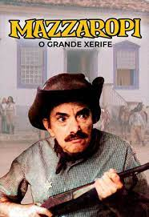

Ester Marques de Oliveira Rocha
Tenho 18 anos, faço faculdade de sistemas de informação e estou em busca de conhecimentos fora da instituição.
Amo jardinagem e de cozinhar no tempo livre
Gosto de ler livros de romance, autoajuda e de desenvolvimento pessoal e profissional
História da minha cidade
Músicas que mais gosto
- O Teatro Mágico - O anjo mais velho
- Rita Lee - Barriga da Mamãe
- Tiago PZK, Trueno - Salimo de Noche
Comidas Preferidas
- Strogonoff de Frango
- Ensopado de carne
- Bolinha de Queijo
Filmes que mais gosto
- Mazzaropi - O Grande Xerife
- Fuja
- Mazzaropi - Meu Japão Brasileiro
- A Última Casa da Rua
